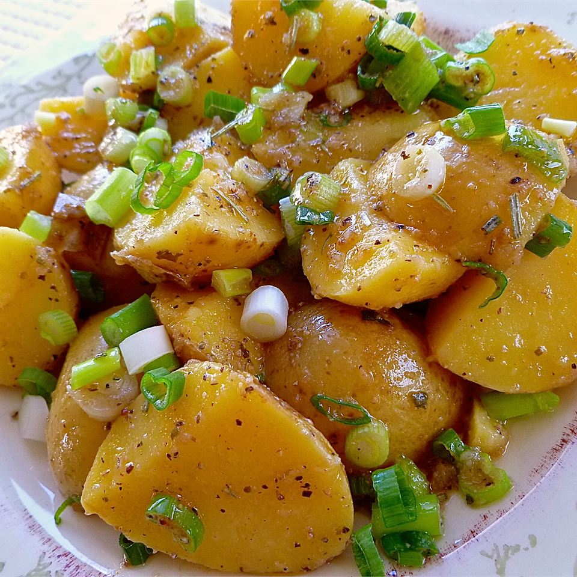

Potato Salad

Recipe for easy potato salad
Ingredients
- Red potatoes
- green onion
- olive oil
- red wine vinegar
- lemon juice
- garlic powder
- salt
- black pepper
- oregano
- white sugar
- rosemary
- red pepper
Steps
-
Place potatoes in pot with salt water and boil for about 25 min. After
chill in freezer for 30min
-
Slice potatoes. Toss potatoes with green onion, whisk other Ingredients.
Pour dressing over potatoes and toss. Serve immidietly
Recipe from.
All recipes